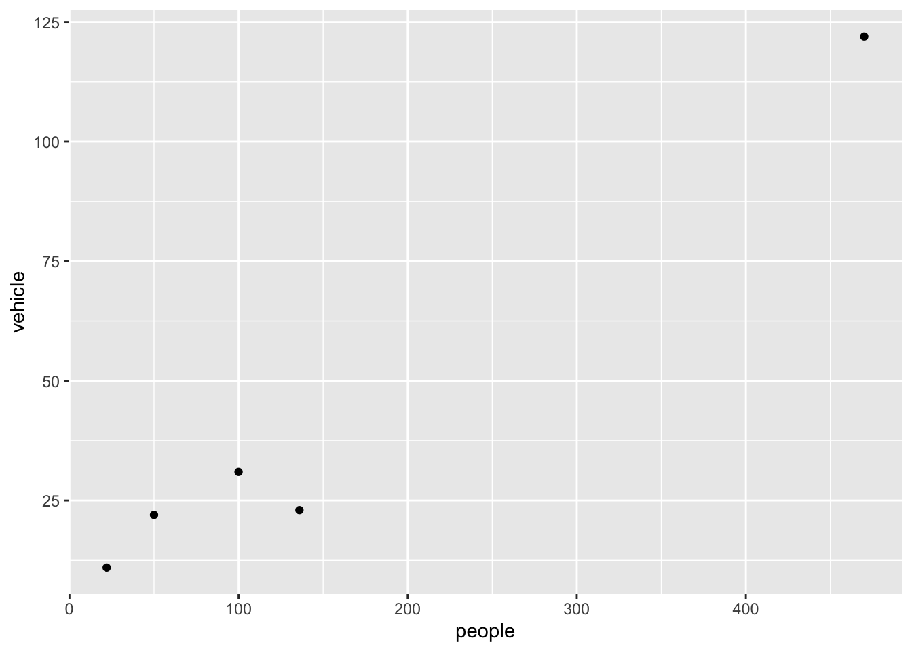
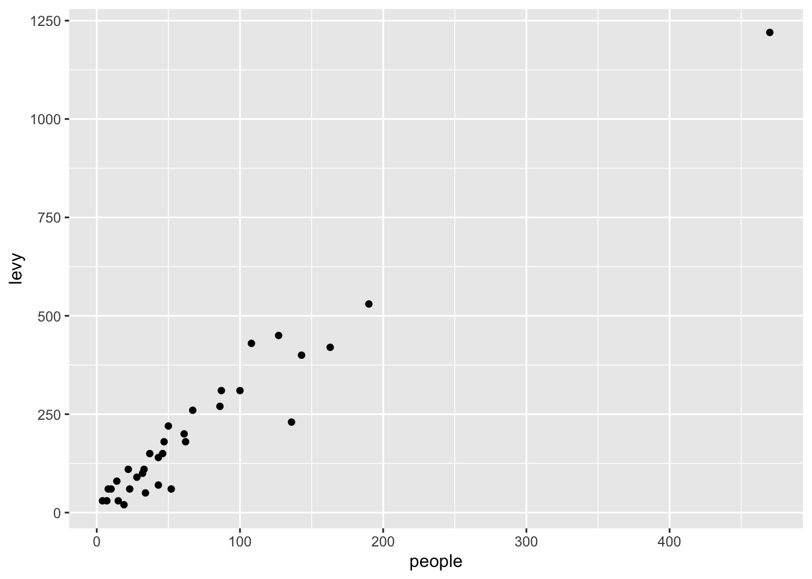

Code
library(tidyverse)Copy this code and paste it into a new quarto document in R. We will be using quarto for assignments, it is good to practice using it with each workshop.
tidyrBy the phrase tidy data, it is meant the preferred way of arranging data that is easy to analyse. The principles of tidy data are:
We will be largely using the tidyverse suite of packages for data organisation, summarizing, and plotting; see https://www.tidyverse.org/.
Let’s load that package now: Remember if you have not installed it you will need to use install.packages() first. We installed it in the first workshop so you can return to that code to see how we did it.
library(tidyverse)For this workshop we will use some tidyverse built in datasets. Each dataset below shows the same values of four variables: country, year, population, and number of documented cases of TB (tuberculosis), but each dataset organizes the values in a different way. Take a look at these datasets by typing their names into a code chunk or directly into the console. You can also try your hand at the functions head() and summary().
table1# A tibble: 6 × 4
country year cases population
<chr> <dbl> <dbl> <dbl>
1 Afghanistan 1999 745 19987071
2 Afghanistan 2000 2666 20595360
3 Brazil 1999 37737 172006362
4 Brazil 2000 80488 174504898
5 China 1999 212258 1272915272
6 China 2000 213766 1280428583table2# A tibble: 12 × 4
country year type count
<chr> <dbl> <chr> <dbl>
1 Afghanistan 1999 cases 745
2 Afghanistan 1999 population 19987071
3 Afghanistan 2000 cases 2666
4 Afghanistan 2000 population 20595360
5 Brazil 1999 cases 37737
6 Brazil 1999 population 172006362
7 Brazil 2000 cases 80488
8 Brazil 2000 population 174504898
9 China 1999 cases 212258
10 China 1999 population 1272915272
11 China 2000 cases 213766
12 China 2000 population 1280428583table3# A tibble: 6 × 3
country year rate
<chr> <dbl> <chr>
1 Afghanistan 1999 745/19987071
2 Afghanistan 2000 2666/20595360
3 Brazil 1999 37737/172006362
4 Brazil 2000 80488/174504898
5 China 1999 212258/1272915272
6 China 2000 213766/1280428583For each of the sample tables, describe what each observation and each column represents. Which is the most tidy?
The piping operation is a fundamental aspect of computer programming. The semantics of pipes is taking the output from the left-hand side and passing it as input to the right-hand side.
The R package magrittr introduced the pipe operator %>% and can be pronounced as “then”. In RStudio windows/Linux versions, press Ctrl+Shift+M to insert the pipe operator. On a Mac, use Cmd+Shift+M.
R also has its own pipe, |>, which is an alternative to %>%. You will see both used in this course. If you want to change the pipe inserted automatically with Ctrl+Shift+M, find on the menu Tools > Global Options, then click on Code and check the box that says “Use Native Pipe Operator”.
Consider the study guide dataset rangitikei.csv (Recreational Use of the Rangitikei river). The first 10 rows of this dataset are shown below:
id loc time w.e cl wind temp river people vehicle
1 1 1 2 1 1 2 2 1 37 15
2 2 1 1 1 1 2 1 2 23 6
3 3 1 2 1 1 2 2 3 87 31
4 4 2 2 1 1 2 1 1 86 27
5 5 2 1 1 1 2 2 2 19 2
6 6 2 2 1 2 1 3 3 136 23
7 7 1 2 2 2 2 2 3 14 8
8 8 1 2 1 2 2 2 3 67 26
9 9 1 1 2 1 3 1 2 4 3
10 10 2 2 1 2 2 2 3 127 45Try the following examples after loading the rangitikei dataset.
select()
new.data <- rangitikei |>
select(people, vehicle)
names(new.data)[1] "people" "vehicle"What does select() do?
rangitikei |>
select(people, vehicle) |> # select columns
ggplot() + # make a plot using those columns
aes(x=people, y=vehicle) +
geom_point()
We select two columns and create a scatter plot with the above commands.
Now try another function:
filter()
rangitikei |>
filter(wind==1) |>
select(people, vehicle) |>
ggplot() +
aes(x=people, y=vehicle) +
geom_point()
What does filter() do?
The above commands filter the data for the low wind days and plots vehicle against people. filter() subsets the data for all observations matching a specified criteria.
arrange()
rangitikei |>
filter(wind==1) |>
arrange(w.e) |>
select(w.e, people, vehicle) w.e people vehicle
1 1 136 23
2 1 50 22
3 1 100 31
4 1 470 122
5 2 22 11mutate()
Assume that a $10 levy is collected for each vehicle. We can create this new levy column as follows.
rangitikei |>
mutate(levy = vehicle*10) |>
select(people, levy) |>
ggplot() +
aes(x = people, y=levy) +
geom_point()
Note that the pipe operation was used to create a scatter plot using the newly created column.
summarise()
rangitikei |>
summarise(total = n(),
avg = mean(people)
) total avg
1 33 71.72727We obtain the selected summary measures namely the total and the mean number of people. Try-
rangitikei |>
filter(wind == 1) |>
summarise(total = n(),
avg = mean(people)
) total avg
1 5 155.6group_by()
We obtain the wind group-wise summaries below:
rangitikei |>
group_by(wind) |>
summarise(total=n(),
avg=mean(people))# A tibble: 3 × 3
wind total avg
<int> <int> <dbl>
1 1 5 156.
2 2 26 59.7
3 3 2 19 There are many more commands such as the transmute function which conserves the only the needed columns. Try
rangitikei |>
group_by(wind, w.e) |>
transmute(total=n(),
avg=mean(people))# A tibble: 33 × 4
# Groups: wind, w.e [6]
wind w.e total avg
<int> <int> <int> <dbl>
1 2 1 18 72.1
2 2 1 18 72.1
3 2 1 18 72.1
4 2 1 18 72.1
5 2 1 18 72.1
6 1 1 4 189
7 2 2 8 31.8
8 2 1 18 72.1
9 3 2 1 4
10 2 1 18 72.1
# ℹ 23 more rowsA simple frequency table is found using count(). Try-
rangitikei |>
group_by(wind, w.e) |>
count(temp)# A tibble: 10 × 4
# Groups: wind, w.e [6]
wind w.e temp n
<int> <int> <int> <int>
1 1 1 1 1
2 1 1 3 3
3 1 2 3 1
4 2 1 1 4
5 2 1 2 12
6 2 1 3 2
7 2 2 2 6
8 2 2 3 2
9 3 1 2 1
10 3 2 1 1rangitikei |>
group_by(wind, w.e) |>
count(temp, river)# A tibble: 16 × 5
# Groups: wind, w.e [6]
wind w.e temp river n
<int> <int> <int> <int> <int>
1 1 1 1 1 1
2 1 1 3 3 3
3 1 2 3 3 1
4 2 1 1 1 1
5 2 1 1 2 1
6 2 1 1 3 2
7 2 1 2 1 3
8 2 1 2 2 2
9 2 1 2 3 7
10 2 1 3 3 2
11 2 2 2 1 2
12 2 2 2 3 4
13 2 2 3 2 1
14 2 2 3 3 1
15 3 1 2 2 1
16 3 2 1 2 1The count() is useful to check the balanced nature of the data when many subgroups are involved.
Generate a summary table to show the average number of people observed at each of the three rivers.
# your code goes hereGenerate a summary table to show the average number of vehicles observed at each of the three wind levels.
# your code goes hereRepeat the above exercise 1.2 but now calculate the median number of people and the median number of vehicles at each river in a single table.
# your code goes hereUse the above three tables you generate to describe the Rangitikei dataset. What other information or tables might be useful?
Now let’s practice using these functions using the TB data.
Using table1, compute rate of TB cases per 10,000 and the total cases per year
# your code goes hereGenerate a summary table to show the total cases in each country. Your table should have 3 rows.
# your code goes hereFor table2, write pseudo-code for how you would perform the following actions. Sketch/describe how you would do these.
What does na.rm = TRUE do in the functions mean() and sum()?
# your code goes hereWhat does the function na.omit() do? Why would you add it to a piping sequence of code when tidying data?
# your code goes here